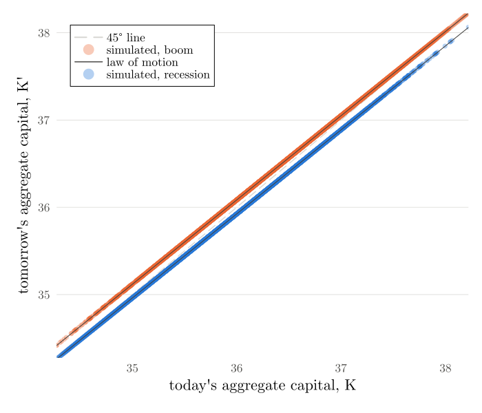
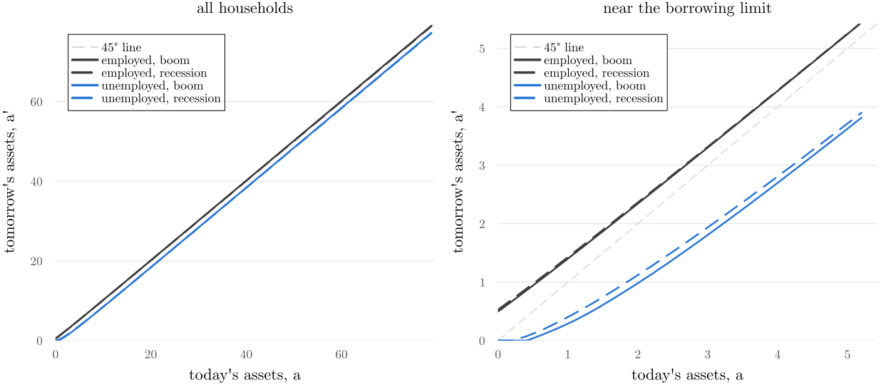
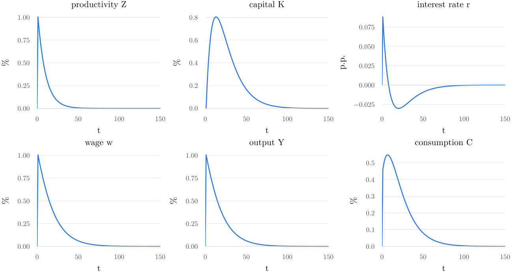
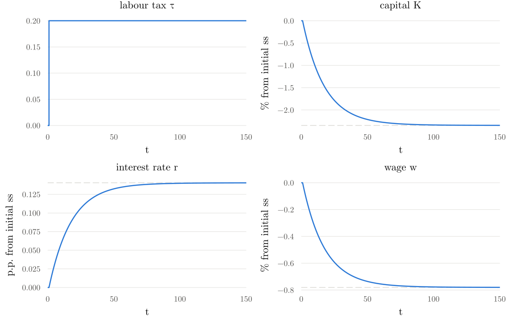
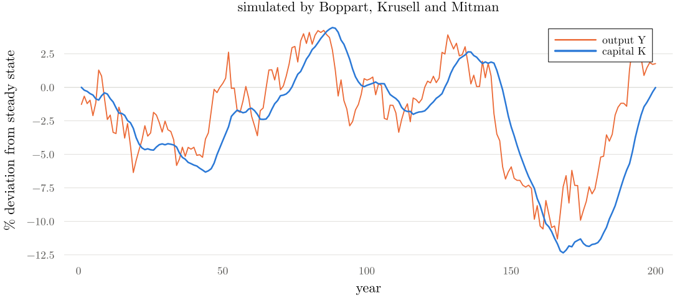

EC991 Topics in Macroeconomics · Week 7 Lab
Part A solves the economy the way Krusell and Smith did: households forecast aggregate capital with a simple rule, and the rule is fitted to the economy it creates. Part B indexes everything by time instead: an unexpected shock, then the path back to the steady state.
In VS Code, open your EC991 folder and choose Pull in the Source Control pane, or from a terminal:
cd EC991 # wherever you cloned it in week 1
git pullA new folder appears:
EC991/
└── week07/
└── lab/
├── week07_code_guide.html # this page
└── EC991Week7/ # the package: all the code
├── Project.toml, Manifest.toml, README.md
├── src/
├── run/
└── test/Then copy the whole lab folder into your own repository and commit it.
cp -R EC991/week07/lab ec991-work/week07Copy-Item -Recurse EC991\week07\lab ec991-work\week07the folder ec991-work/week07/EC991Week7 exists and git log --oneline -1 in ec991-work shows your commit.
Production is $Y_t = Z_t K_t^{\alpha} N_t^{1-\alpha}$, so prices depend on $Z_t$ and on capital (lecture slide 3):
$$r_t + \delta = \alpha Z_t \left(\frac{K_t}{N_t}\right)^{\alpha - 1}, \qquad w_t = (1-\alpha) Z_t \left(\frac{K_t}{N_t}\right)^{\alpha} .$$In week 4, $r$ and $w$ were two numbers, fixed for ever. Now a household must know today's prices and forecast tomorrow's, and tomorrow's capital $K_{t+1}$ is the sum of everyone's saving today (slide 10).
| Step | Week 4 | Part A: Krusell–Smith | Part B: sequence space |
|---|---|---|---|
| What households must know | $r$ and $w$ | $Z$, $K$, and the rule $\log K' = \theta_{0Z} + \theta_{1Z} \log K$ | the paths $\{r_t, w_t\}_{t=1}^{T}$ |
| The unknown | one number, $r$ | four numbers, $\theta$ | a path, $\{K_t\}_{t=2}^{T-1}$ |
| The household | solve_egm | solve_ks_household: EGM over $(a, y, Z, K)$ | backward_pass: one EGM step per date, from $T$ back to 1 |
| The distribution | stationary_distribution | simulate_capital: forward for 11,000 quarters | forward_pass: forward from the initial steady state |
| The update | bisection on $r$ | regression, then $\theta \leftarrow \omega \theta^{\text{new}} + (1 - \omega) \theta$ | $K^g \leftarrow \omega K^s + (1 - \omega) K^g$ |
One call each:
eq = solve_krusell_smith(KSEconomy()) # Part A
ss = solve_steady_state(Economy()) # Part B: week 4's steady state ...
tr = mit_shock(ss; ε = 0.01, ρ_Z = 0.9) # ... and the path after a 1% shockSlide numbers are pages of the week 7 lecture.
| File | What it holds | Slides |
|---|---|---|
markov.jl | Rouwenhorst and stationary from week 4; simulate_chain | |
tools.jl | the asset grid, LinearInterp, bracket, marginal utility, Young's lottery and move_assets!, gini, top_share | |
| Part A: Krusell–Smith | ||
ks_economy.jl | KSEconomy, employment_transitions, joint_transition, ks_prices, ks_setup | 3, 6, 18–22 |
ks_household.jl | forecast_K, ks_egm_step!, solve_ks_household, individual_rule | 10, 13, 14, 25 |
ks_simulate.jl | simulate_Z, initial_distribution, simulate_capital | 15, 22 |
ks_equilibrium.jl | regress_law_of_motion, solve_krusell_smith, forecast_errors | 15–17, 23 |
ks_statistics.jl | aggregate_series, business_cycle_stats, wealth_stats | 29, 30 |
| Part B: sequence space | ||
aiyagari.jl | Economy, prices, income, egm_backward!, solve_steady_state | 33, 34, 37 |
transition.jl | backward_pass, forward_pass, solve_transition, mit_shock, tax_reform | 33–41 |
bkm.jl | impulse_response, bkm_simulate | 42–45 |
In run/, plotting.jl holds the plotting helpers that the other scripts include.
The parameters are the lecture's (slides 18 to 22), one period a quarter: $\beta = 0.99$, log utility, $\alpha = 0.36$, $\delta = 0.025$, $Z \in \{0.99, 1.01\}$ with $P(Z' = Z \mid Z) = 0.875$, and $y \in \{0.25, 1\}$ for the unemployed and the employed. In the code, index 1 is always the low state: z = 1 is a recession, j = 1 is unemployment.
The joint chain factors as $P(y', Z' \mid y, Z) = P(y' \mid y, Z, Z')\, P(Z' \mid Z)$. Slides 20 and 21 give the unemployed rows of $P(y' \mid y, Z, Z')$. The employed rows are not given: they follow from aggregate consistency (slide 22). With $u(Z)$ the unemployment rate, 10% in a recession and 4% in a boom, the unemployed tomorrow are the unemployed who stay unemployed plus the employed who lose their jobs:
$$u(Z') = P(y_l \mid y_l, Z, Z')\, u(Z) + P(y_l \mid y_h, Z, Z')\, \big(1 - u(Z)\big) .$$That is one equation in one unknown, the job-loss probability:
function employment_transitions(eco::KSEconomy)
(; u, stay_unemployed) = eco
Py = zeros(2, 2, 2, 2)
for z in 1:2, z′ in 1:2
# the unemployed: given on slides 20 and 21
p_ll = stay_unemployed[z, z′]
Py[1, :, z, z′] = [p_ll, 1 - p_ll]
# the employed: the job-loss probability that keeps the unemployment rate at u(Z')
p_hl = (u[z′] - p_ll * u[z]) / (1 - u[z])
0 <= p_hl <= 1 || error("no job-loss probability is consistent with u for z = $z, z′ = $z′")
Py[2, :, z, z′] = [p_hl, 1 - p_hl]
end
return Py
endThe job-loss probabilities this gives:
| $Z' = Z_l$ | $Z' = Z_h$ | |
|---|---|---|
| $Z = Z_l$ | $(0.10 - 0.6 \times 0.10) / 0.90 = 0.0444$ | $(0.04 - 0.25 \times 0.10) / 0.90 = 0.0167$ |
| $Z = Z_h$ | $(0.10 - 0.75 \times 0.04) / 0.96 = 0.0729$ | $(0.04 - \tfrac13 \times 0.04) / 0.96 = 0.0278$ |
joint_transition(eco) multiplies the two factors into the $4 \times 4$ matrix of slide 6. The code never uses it, but the tests check the adding-up condition on it: summing a row over $y'$ gives $P(Z' \mid Z)$, whatever $y$ is. Labour depends on $Z$ alone (slide 10): $N(Z_l) = 0.1 \times 0.25 + 0.9 = 0.925$ and $N(Z_h) = 0.97$. Prices come from the firm:
function ks_prices(Z, K, N, eco::KSEconomy)
(; α, δ) = eco
r = α * Z * (K / N)^(α - 1) - δ
w = (1 - α) * Z * (K / N)^α
return 1 + r, w
endKrusell and Smith measure labour in hours: an employed household works about a third of its time, and an unemployed household earns nothing. Here labour is $y \in \{0.25, 1\}$, so $N$ is about three times theirs, and so is $K$, because prices depend on $K / N$ only. With log utility and $a' \ge 0$, scaling every income scales every saving choice by the same factor. So the slopes $\theta_{1Z}$, the $R^2$, the correlations and the wealth shares do not depend on units, and those are the numbers to compare with the lecture.
The approximate problem of slide 14 replaces the distribution $\Lambda$ by aggregate capital $K$:
$$V(a, y;\, Z, K) = \max_{a' \ge 0} \Big[ u(c) + \beta \sum_{y'} \sum_{Z'} V(a', y';\, Z', K')\, P(y', Z' \mid y, Z) \Big], \qquad \log K' = \theta_{0Z} + \theta_{1Z} \log K .$$forecast_K(K, z, θ) = exp(θ[1, z] + θ[2, z] * log(K))θ is a $2 \times 2$ matrix: column z holds $(\theta_{0Z}, \theta_{1Z})$. The household is solved by week 4's endogenous grid method, with the Euler equation of slide 10:
The policy now lives on a four-dimensional grid, c[i, j, z, k] at $(a_i, y_j, Z_z, K_k)$: $100 \times 2 \times 2 \times 7$ points. Two things are new. Tomorrow's capital $K'$ comes from the rule and is off the $K$ grid, so tomorrow's consumption is interpolated between the two nearest $K$ points. And tomorrow's return $R'$ depends on $Z'$, so it sits inside the expectation.
function ks_egm_step!(c1, apol, c0, θ, eco::KSEconomy, s)
(; β, γ, Z, y) = eco
(; a, Kgrid, N, PZ, Py) = s
EMU = zeros(length(a))
â = similar(a)
for k in eachindex(Kgrid), z in 1:2
# 1. prices today
R, w = ks_prices(Z[z], Kgrid[k], N[z], eco)
# 2. tomorrow's capital, from the perceived law of motion, and where it sits on the K grid
K′ = forecast_K(Kgrid[k], z, θ)
kk, ωK = bracket(K′, Kgrid)
for j in 1:2
# 3. expected marginal utility times the return, for every choice a'_i
fill!(EMU, 0.0)
for z′ in 1:2
R′, _ = ks_prices(Z[z′], K′, N[z′], eco)
for j′ in 1:2
prob = PZ[z, z′] * Py[j, j′, z, z′]
for i in eachindex(a)
# tomorrow's consumption at K', between two points of the K grid
c′ = ωK * c0[i, j′, z′, kk] + (1 - ωK) * c0[i, j′, z′, kk+1]
EMU[i] += prob * R′ * marginal_utility(c′, γ)
end
end
end
# invert the Euler equation, then the budget constraint: c + a' = R a + w y
for i in eachindex(a)
c̃ = inverse_marginal_utility(β * EMU[i], γ)
â[i] = (c̃ + a[i] - w * y[j]) / R
end
# 4. back on the grid: a[i] now means today's assets
ĝ = LinearInterp(â, a)
for i in eachindex(a)
apol[i, j, z, k] = max(ĝ(a[i]), a[1])
c1[i, j, z, k] = R * a[i] + w * y[j] - apol[i, j, z, k]
end
end
end
return c1, apol
end| Code | Maths |
|---|---|
Kgrid[k] | today's aggregate capital, $K_k$ |
K′ | $\exp(\theta_{0Z} + \theta_{1Z} \log K_k)$, tomorrow's capital from the rule |
kk, ωK | $K' \approx \omega_K K_{kk} + (1 - \omega_K) K_{kk+1}$ |
prob | $P(Z' \mid Z)\, P(y' \mid y, Z, Z') = P(y', Z' \mid y, Z)$ |
EMU[i] | $\sum_{y', Z'} P(y', Z' \mid y, Z)\, R'\, u'(c(a'_i, y', Z', K'))$ |
â[i] | the assets today that lead to $a'_i$ |
solve_ks_household iterates this until consumption moves by less than $10^{-8}$. That takes about 1,000 iterations each time, because $\beta = 0.99$ is close to one, even when a solve starts from the previous rule's policy.
Slide 15 simulates a panel of households and averages their assets. The code uses week 4's histogram instead: the distribution $\lambda_t$ on a 1,000-point asset grid, moved forward by Young's lottery. It is the panel with infinitely many households. The simulated $K_t$ then has no sampling noise, so the regression sees only the economy's own dynamics, and the unemployment rate is exactly $u(Z_t)$ at every date.
function simulate_capital(sol::KSSolution, zpath, eco::KSEconomy, s; λ_start)
(; a_dist, Kgrid, Py) = s
gd = policy_on_dist(sol, s)
T = length(zpath)
K = zeros(T)
λ, μ = copy(λ_start), similar(λ_start)
g = zeros(length(a_dist), 2)
for t in 1:T
z = zpath[t]
# 1. aggregate capital: the first moment of the wealth distribution
K[t] = sum(a_dist .* λ)
t == T && break
# 2. the saving rule at (Z_t, K_t)
k, ωK = bracket(K[t], Kgrid)
@views g .= ωK .* gd[:, :, z, k] .+ (1 - ωK) .* gd[:, :, z, k+1]
# 3. assets move, then endowments, with the probabilities for Z_t → Z_{t+1}
move_assets!(μ, λ, g, a_dist)
mul!(λ, μ, view(Py, :, :, z, zpath[t+1]))
end
return (; K, λ)
endThree details:
simulate_Z draws 11,000 quarters of $Z_t$ from a fixed seed, and every iteration of the algorithm uses that same path. With new shocks each time, $\theta$ would move with the draws and might never settle.mul!(λ, μ, view(Py, :, :, z, zpath[t+1])) moves endowments with the probabilities for the pair $(Z_t, Z_{t+1})$. Because the employed rows came from slide 22, the unemployed share lands exactly on $u(Z_{t+1})$. The tests check it at every date.For each $Z$, regress $\log K_{t+1}$ on $\log K_t$ over the dates with $Z_t = Z$ (slides 15 and 16):
function regress_law_of_motion(K, zpath, T_burn)
θ, R2, σ = zeros(2, 2), zeros(2), zeros(2)
for z in 1:2
# the dates in state z, and the pairs (log K_t, log K_{t+1})
ts = [t for t in T_burn+1:length(K)-1 if zpath[t] == z]
x, yv = log.(K[ts]), log.(K[ts .+ 1])
x̄, ȳ = sum(x) / length(x), sum(yv) / length(yv)
slope = sum((x .- x̄) .* (yv .- ȳ)) / sum((x .- x̄) .^ 2)
θ[:, z] = [ȳ - slope * x̄, slope]
resid = yv .- θ[1, z] .- slope .* x
R2[z] = 1 - sum(resid .^ 2) / sum((yv .- ȳ) .^ 2)
σ[z] = sqrt(sum(resid .^ 2) / (length(resid) - 2))
end
return θ, R2, σ
endThe loop of slide 15, with slide 17's first guess, $\theta_{0Z} = \log K_{ss}$ and $\theta_{1Z} = 0$: households first believe capital never moves.
function solve_krusell_smith(eco::KSEconomy = KSEconomy(); θ_start = nothing, ω = 0.3, tol = 1e-6,
maxiter = 200, callback = (n, θ, d) -> nothing)
s = ks_setup(eco)
zpath = simulate_Z(eco, s)
# 1. the first guess: K stays at the representative agent's steady state
θ = θ_start === nothing ? [log(s.K_ra) log(s.K_ra); 0.0 0.0] : copy(θ_start)
# every simulation starts with all households at that steady state
λ_start = initial_distribution(s.K_ra, zpath[1], eco, s)
sol, history = nothing, Float64[]
for n in 1:maxiter
# 2. the household problem, given the rule
sol = solve_ks_household(θ, eco, s; c_start = sol === nothing ? nothing : sol.c)
# 3. simulate, 4. regress
sim = simulate_capital(sol, zpath, eco, s; λ_start)
θ_new, R2, σ = regress_law_of_motion(sim.K, zpath, eco.T_burn)
# 5. compare, then update
d = maximum(abs.(θ_new .- θ))
push!(history, d)
callback(n, θ_new, d)
if d < tol
return KSEquilibrium(eco, s, θ_new, R2, σ, sol, zpath, sim.K, sim.λ, history)
end
θ = ω .* θ_new .+ (1 - ω) .* θ
end
error("the forecasting rule did not converge in $maxiter iterations")
endrun/solve_krusell_smith.jl prints the rule at every iteration:
With $\omega = 0.3$ the rule converges in 30 iterations. With $\omega = 0.5$ it zigzags between two values and needs 60. With $\omega = 0.7$ it does not converge in 200. If the distance stops falling, lower $\omega$.
| $\theta_{0Z}$ | $\theta_{1Z}$ | $R^2$ | s.d. of residuals | |
|---|---|---|---|---|
| Boom, this code | 0.1328 | 0.9636 | 0.9999992 | 0.0018% |
| Boom, Krusell and Smith | 0.095 | 0.962 | 0.999998 | 0.0028% |
| Recession, this code | 0.1219 | 0.9654 | 0.9999989 | 0.0020% |
| Recession, Krusell and Smith | 0.085 | 0.965 | 0.999998 | 0.0036% |
The slopes match theirs to the third decimal; the intercepts differ because $K$ is in different units (Part 4). Quasi-aggregation holds: the rule explains all but a millionth of the variation in $K'$. The rule must also forecast far ahead. forecast_errors(eq) starts from the actual $K$ and iterates the rule forward, looking only at the shocks. One hundred quarters (25 years) ahead, the forecast is off by 0.033% on average and by 0.13% at worst, close to slide 23's 0.1%.

Slide 24, from plot_aggregate_rule. In a boom, capital grows at every $K$ in the simulation; in a recession it shrinks. The boom line crosses the 45° line at $K = 38.4$, the level capital would reach if the boom lasted for ever, and the recession line at 33.9: capital moves back and forth between the two, and the simulation stays between 34.3 and 38.2. The dots are the 10,000 simulated pairs $(K_t, K_{t+1})$, and they lie on the lines.
individual_rule(eq.sol, eq.s, j, z, K) reads off $a' = g_a(a, y_j;\, Z_z, K)$ at any $K$:

Away from zero the rules are straight lines with the same slope: every household saves the same share of an extra unit of wealth. Then aggregate saving depends on the distribution only through its mean, which is why $K$ alone forecasts $K'$ so well (slide 26). The bend sits near the borrowing limit, where poor unemployed households run their assets down to zero; they hold too little capital to move the aggregate.
| Top 1% | Top 5% | Top 10% | Top 20% | Top 30% | Gini | |
|---|---|---|---|---|---|---|
| This code | 3.2 | 12.5 | 22.0 | 37.5 | 50.3 | 0.30 |
| Krusell and Smith, benchmark | 3 | 11 | 19 | 35 | 46 | 0.25 |
| Data | 30 | 51 | 64 | 79 | 88 | 0.79 |
| Mean($K_t$) | corr($C_t, Y_t$) | s.d.($I_t$) | corr($Y_t, Y_{t-4}$) | |
|---|---|---|---|---|
| This code | 36.14 | 0.690 | 0.078 | 0.450 |
| Krusell and Smith, incomplete markets | 11.61 | 0.701 | 0.030 | 0.481 |
Mean capital and the standard deviation of investment are in units of $K$, so they are larger than Krusell and Smith's. The correlations are unit-free and close to theirs. Wealth is far less concentrated than in the data: with one discount factor, income risk alone cannot make anyone very rich. That is the point of the stochastic-$\beta$ model on slide 28.
Part B uses the week 4 economy as it was ($\beta = 0.96$, $\gamma = 2$, $\alpha = 0.33$, $\delta = 0.05$, seven income states, one period a year), with productivity $Z$ in front of the production function and a labour tax $\tau$ whose revenue goes back as a lump sum (slide 37). In the steady state $Z = 1$ and $\tau = 0$, and solve_steady_state is week 4's bisection on $r$. It gives week 4's answer, $r = 0.037659$, with $K = 7.42486$.
Along a transition, today's return $R_t$ and tomorrow's $R_{t+1}$ differ. That is the one change to week 4's EGM step:
$$u'(\tilde c) = \beta R_{t+1} \sum_m P[j, m]\, u'\big(c_{t+1}(a'_i, y_m)\big), \qquad \hat a = \frac{\tilde c + a'_i - \big((1 - \tau_t) w_t y_j + \tau_t w_t N\big)}{R_t} .$$function egm_backward!(c, apol, c′, R′, R, inc, a, P, β, γ)
# read a[i] as tomorrow's assets: EMU[i, j] = Σ_m P[j, m] u'(c′[i, m])
EMU = marginal_utility.(c′, γ) * P'
â = similar(a)
for j in axes(c, 2)
# invert the Euler equation, then the budget constraint
for i in eachindex(a)
c̃ = inverse_marginal_utility(β * R′ * EMU[i, j], γ)
â[i] = (c̃ + a[i] - inc[j]) / R
end
# back on the grid: a[i] now means today's assets
ĝ = LinearInterp(â, a)
for i in eachindex(a)
apol[i, j] = max(ĝ(a[i]), a[1])
c[i, j] = R * a[i] + inc[j] - apol[i, j]
end
end
return c, apol
endThe algorithm of slides 39 and 40. Step (ii): guess the capital path. $K_1$ is fixed by the initial distribution, because capital is chosen the period before, and $K_T$ is the final steady state's. Prices follow from the guess. Step (iii): households backwards, from the final steady state's policy at $T$:
function backward_pass(K, Z, τ, ss1::SteadyState)
(; β, γ, α, δ) = ss1.eco
(; y, P, N, a) = ss1.s
T = length(K)
pr = [prices(Z[t], K[t], N, α, δ) for t in 1:T]
R, w = first.(pr), last.(pr)
c = zeros(length(a), length(y), T)
apol = similar(c)
# date T: the final steady state
c[:, :, T] .= ss1.c
apol[:, :, T] .= ss1.apol
# dates T-1, ..., 1: V_T → V_{T-1} → ... → V_1, one EGM step at a time
for t in T-1:-1:1
@views egm_backward!(c[:, :, t], apol[:, :, t], c[:, :, t+1], R[t+1], R[t],
income(w[t], τ[t], y, N), a, P, β, γ)
end
return (; c, apol, R, w)
endSteps (iv) and (v): the distribution forwards, from the initial steady state's $\lambda$, and the capital it implies, $K^s_t = \sum_j a_j \lambda_{t,j}$:
function forward_pass(apol, ss0::SteadyState)
(; P, a) = ss0.s
T = size(apol, 3)
λ = zeros(size(apol))
λ[:, :, 1] .= ss0.λ
μ = similar(ss0.λ)
for t in 1:T-1
# assets move by the lottery, then income by P
@views move_assets!(μ, λ[:, :, t], apol[:, :, t], a)
@views mul!(λ[:, :, t+1], μ, P)
end
Ks = [sum(a .* view(λ, :, :, t)) for t in 1:T]
return Ks, λ
endStep (vi): compare, and update with dampening:
function solve_transition(ss0::SteadyState, ss1::SteadyState, Z, τ; ω = 0.2, tol = 1e-8,
maxiter = 2_000, K_start = nothing, callback = (n, d) -> nothing)
(; α, δ) = ss1.eco
(; y, N, a) = ss1.s
T = length(Z)
# (ii) the first guess; the two ends never change
K = K_start === nothing ? fill(ss1.K, T) : copy(K_start)
K[1], K[T] = ss0.Ea, ss1.K
history = Float64[]
for n in 1:maxiter
# (iii) households backwards, (iv) and (v) the distribution forwards
bw = backward_pass(K, Z, τ, ss1)
Ks, λ = forward_pass(bw.apol, ss0)
# (vi) compare implied with guessed capital
d = maximum(abs.(Ks[2:T-1] .- K[2:T-1]))
push!(history, d)
callback(n, d)
if d < tol
return transition_paths(ss0, ss1, Z, τ, K, Ks, bw, λ, n, history)
end
K[2:T-1] .= ω .* Ks[2:T-1] .+ (1 - ω) .* K[2:T-1]
end
error("the transition did not converge in $maxiter iterations")
end| Code | Maths |
|---|---|
K | the guess $\{K^g_t\}_{t=1}^{T}$, with $K^g_1$ and $K^g_T$ fixed |
bw.apol[:, :, t] | $g_{a,t}(a, y)$, the saving policy at date $t$ |
λ[:, :, t] | $\lambda_t$, shares on the asset–income grid |
Ks | $\{K^s_t\}$, the capital households supply |
d | $\max_{2 \le t \le T-1} |K^s_t - K^g_t|$ |
At $t = 1$, $\log Z_1 = 0.01$, and the shock dies out at rate $\rho_Z = 0.9$ (slide 33). The transition starts and ends in the same steady state:
function mit_shock(ss::SteadyState; ε = 0.01, ρ_Z = 0.9, T = 300, kwargs...)
Z = ss.eco.Z .* exp.(ε .* ρ_Z .^ (0:T-1))
τ = fill(ss.eco.τ, T)
return solve_transition(ss, ss, Z, τ; kwargs...)
end
Slide 35, from run/mit_shock.jl. Capital cannot move at $t = 1$: it was chosen at $t = 0$, when nobody expected the shock. Households save part of the extra income, so capital builds up for 13 years, to 0.8% above the steady state. Consumption jumps by less than income (0.46% against 1.0%) and keeps rising while capital does. Once productivity has faded, the extra capital pushes the interest rate below its steady-state value. run/mit_shock.jl also draws slide 36: the Gini of wealth falls by about 0.0014 and the share of households at the borrowing limit by about 0.1 percentage points, because the shock raises everyone's wage.
With $\omega = 0.2$ the transition converges in 61 iterations. With $\omega = 0.5$ the distance cycles between 13.6 and 51 for ever: run run/mit_shock.jl 0.5 to see it. Then check the last transition: $K^s_T - K_T = -3 \times 10^{-5}$ at $T = 300$. Capital dips slightly below its steady state after the hump and returns slowly, so the gap halves only about every 55 years. It is 0.0004% of $K$, small enough here. If it is not small, raise $T$.
Slide 37: the economy is in its steady state with $\tau = 0$, and at $t = 1$ the labour tax rises to 0.2 for ever. The revenue goes back to everyone as the same lump sum, $T = \tau w N$. Now two steady states are needed, and the transition goes from one to the other:
function tax_reform(ss0::SteadyState, ss1::SteadyState; T = 300, kwargs...)
Z = fill(ss1.eco.Z, T)
τ = fill(ss1.eco.τ, T)
return solve_transition(ss0, ss1, Z, τ; kwargs...)
end| $\tau = 0$ | $\tau = 0.2$ | |
|---|---|---|
| interest rate $r$ | 0.03766 | 0.03907 |
| wage $w$ | 1.28717 | 1.27712 |
| capital $K$ | 7.42486 | 7.25061 (−2.35%) |

Slide 38. The tax with a lump-sum transfer is insurance: it takes from high incomes and gives to low ones. Households face less risk, so they save less for precautionary reasons, and capital falls. The economy covers half of the way to the new steady state by year 13 and 90% by year 41.
Slide 43: record the response at each horizon per unit of shock, then add up the effects of a sequence of shocks.
impulse_response(x, x̄, ε) = (x .- x̄) ./ ε
function bkm_simulate(h, ε)
x = zeros(length(ε))
for t in eachindex(ε), s in 0:min(t - 1, length(h) - 1)
x[t] += h[s+1] * ε[t-s]
end
return x
endThis works only if responses scale with the shock and do not depend on its sign (slide 42). run/bkm_simulation.jl solves the MIT shock three times and compares capital's response per unit of shock:
| Horizon $s$ | $\varepsilon = +0.01$ | $\varepsilon = -0.01$ | $\varepsilon = +0.05$ |
|---|---|---|---|
| 1 | 0.168 | 0.166 | 0.172 |
| 10 | 0.792 | 0.783 | 0.810 |
| 50 | 0.157 | 0.156 | 0.159 |
| largest gap from $+0.01$, share of the peak | 1.1% | 2.3% |
Close to linear, but not exactly: a five-times-larger shock moves capital 2.3% more per unit. Then 200 years of shocks with $\sigma_\varepsilon = 0.01$:

Slide 44. Each path is a weighted sum of past shocks: once the impulse response is known, no further equilibrium has to be solved. That is the strength of the method (slide 45). Its weakness is that the responses come from a world where households expect no more shocks: aggregate risk has no effect on their saving.
From inside ec991-work/week07/EC991Week7:
julia --project=. -e "using Pkg; Pkg.instantiate()" # once
julia --project=. run/solve_krusell_smith.jl # Part A: slides 23 to 30, graphs for slides 24 and 25
julia --project=. run/mit_shock.jl # Part B: the MIT shock, slides 35 and 36
julia --project=. run/mit_shock.jl 0.5 # the same with ω = 0.5: watch it fail
julia --project=. run/labour_tax.jl # the tax reform, slide 38
julia --project=. run/bkm_simulation.jl # linearity, then slide 44
julia --project=. -e "using Pkg; Pkg.test()" # the checksrun/solve_krusell_smith.jl takes about a minute: 30 household solves and 30 simulations of 11,000 quarters. Each transition in Part B takes several seconds. The scripts print as they go.
using EC991Week7
eq = solve_krusell_smith(KSEconomy())
eq.θ, eq.R2 # the rule and its fit
forecast_errors(eq) # how far ahead it can see
individual_rule(eq.sol, eq.s, 1, 1, 36.0) # the unemployed, in a recession, at K = 36
joint_transition(KSEconomy()) # the 4 × 4 matrix
eq2 = solve_krusell_smith(KSEconomy(T_sim = 4_000)) # any parameter by name
ss = solve_steady_state(Economy())
tr = mit_shock(ss; ε = -0.01) # a 1% fall
tr.K, tr.r, tr.C # the paths
tr = tax_reform(ss, solve_steady_state(Economy(τ = 0.4)))| Statistic | Value |
|---|---|
| rule in a boom, $\log K' = \theta_0 + \theta_1 \log K$ | $0.1328 + 0.9636 \log K$ |
| rule in a recession | $0.1219 + 0.9654 \log K$ |
| mean of $K$ in the simulation | 36.14 |
| steady state of Part B, $r$ and $K$ | 0.037659, 7.42486 |
| MIT shock: peak of $K$ | 0.805% at $t = 13$ |
| tax reform: new steady-state $K$ | 7.25061, −2.35% |
julia --project=. -e "using Pkg; Pkg.test()"They check the $4 \times 4$ matrix against slides 20 to 22 (the unemployed rows, an employed row worked by hand, adding up, consistency), that factor payments exhaust output, and that the histogram keeps unemployment at $u(Z_t)$ at every date. For Krusell–Smith, on a shorter simulation: that the rule has converged with $R^2$ near one and slopes below one, that simulated $K$ stays inside its grid, that saving rises with assets and with employment, and that the borrowing limit binds only for poor households. For Part B: that the steady state is week 4's and is a fixed point of the EGM step, that a zero shock gives no transition, that the MIT transition clears the asset and goods markets at every date and returns to the steady state, that capital falls monotonically after the tax reform, and that adding up impulse responses is exact for single shocks and close to the nonlinear answer for a shock of the opposite sign. The last line should say tests passed.
| You see | Cause and fix |
|---|---|
| The Krusell–Smith distance stops falling and zigzags | Dampening too weak: lower ω, as in solve_krusell_smith(eco; ω = 0.2). |
| The transition's distance cycles or grows | The same in Part B: lower ω in mit_shock(ss; ω = 0.1). It converges more slowly, but it converges. |
| A low $R^2$ after you change a parameter | Check that simulated $K$ stays inside the $K$ grid: outside it the rule is clamped. Widen K_band. |
| Your $\theta_{0Z}$ is not 0.095 as on slide 23 | Expected: $K$ is in different units (Part 4). Compare the slopes. |
end_gap is not small | $T$ is too short for the economy to settle. Raise it: mit_shock(ss; T = 500). |
| The first run is much slower than the second | Julia compiles on first use. Time the second call, in the same REPL session. |
| The run scripts are slow on a many-core machine | Small matrices and many BLAS threads. The scripts call BLAS.set_num_threads(1); do the same in the REPL. |
Package EC991Week7 not found | Julia is in your default environment. Run from inside EC991Week7/ with --project=.. |